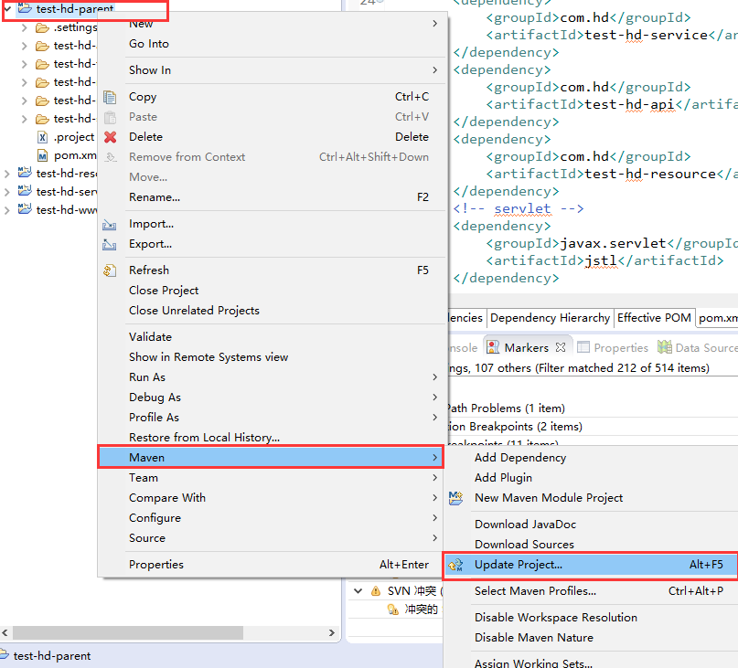
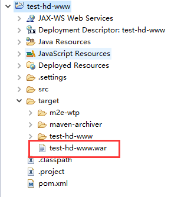

Maven多模块项目
Maven多模块项目,适用于一些比较大的项目，通过合理的模块拆分，实现代码的复用，便于维护和管理。尤其是一些开源框架，也是采用多模块的方式，提供插件集成，用户可以根据需要配置指定的模块。
项目结构如下：
test-hd-parent (父级)
---pom.xml
---test-hd-api (第三方接口层)
----pom.xml
---test-hd-foundation (基础工具层)
----pom.xml
---test-hd-resource (资源层)
----pom.xml
---test-hd-service (逻辑业务层)
----pom.xml
---test-hd-modules (web层)
----pom.xml
---test-hd-www (web模块1)
----pom.xml
---test-hd-admin (web模块2)
----pom.xml
创建一个父maven工程
- 新建一个maven项目，选择存储位置，并选择创建一个简单的maven工程
- 输入Group Id、Artifact Id、Packaging，packaging选择pom包
- 生成父工程，pom.xml如下
- 删除工程中的src 目录
创建子模块
- 右击父工程名---》New---》Project，然后选择新建一个maven module工程
- 设置子工程名以及父工程，再设置快速创建模式
- 得到子工程（test-hd-api，第三方接口层），设置编译的jdk
- 同理设置，子模块：test-hd-foundation(基础工具层)、test-hd-resource(资源层) 、test-hd-service(逻辑业务层)
- 新建test-hd-modules (web层)，选择创建一个a simple project，输入Group Id、Artifact Id、Packaging，packaging选择pom包
创建web子模块
- web子模块在建在test-hd-modules (web层)里面，右击test-hd-modules 工程名---》New---》Project，然后选择新建一个maven module工程，设置子工程名以及父工程，选择新建web项目
- 配置maven web项目，参照：【Maven】Eclipse 使用Maven创建Java Web项目
- 同理可以配置其他的web子模块 test-hd-admin(web模块2)
配置个模块的依赖
- 在parent项目pom.xml中建立依赖管理（dependencyManagement）

1 <project xmlns="http://maven.apache.org/POM/4.0.0" xmlns:xsi="http://www.w3.org/2001/XMLSchema-instance" 2 xsi:schemaLocation="http://maven.apache.org/POM/4.0.0 http://maven.apache.org/xsd/maven-4.0.0.xsd"> 3 <modelVersion>4.0.0</modelVersion> 4 <groupId>com.hd</groupId> 5 <artifactId>test-hd-parent</artifactId> 6 <version>0.0.1-SNAPSHOT</version> 7 <packaging>pom</packaging> 8 <modules> 9 <module>test-hd-api</module> 10 <module>test-hd-service</module> 11 <module>test-hd-resource</module> 12 <module>test-hd-foundation</module> 13 <module>test-hd-modules</module> 14 </modules> 15 16 17 <!-- maven依赖 --> 18 <dependencyManagement> 19 20 <dependencies> 21 <!-- hd --> 22 <dependency> 23 <groupId>com.hd</groupId> 24 <artifactId>test-hd-api</artifactId> 25 <version>0.0.1-SNAPSHOT</version> 26 </dependency> 27 28 <dependency> 29 <groupId>com.hd</groupId> 30 <artifactId>test-hd-service</artifactId> 31 <version>0.0.1-SNAPSHOT</version> 32 </dependency> 33 34 <dependency> 35 <groupId>com.hd</groupId> 36 <artifactId>test-hd-resource</artifactId> 37 <version>0.0.1-SNAPSHOT</version> 38 </dependency> 39 40 <dependency> 41 <groupId>com.hd</groupId> 42 <artifactId>test-hd-foundation</artifactId> 43 <version>0.0.1-SNAPSHOT</version> 44 </dependency> 45 46 <!-- Servlet --> 47 <dependency> 48 <groupId>javax.servlet</groupId> 49 <artifactId>javax.servlet-api</artifactId> 50 <version>3.0.1</version> 51 <scope>provided</scope> 52 </dependency> 53 <dependency> 54 <groupId>javax.servlet.jsp</groupId> 55 <artifactId>jsp-api</artifactId> 56 <version>2.2</version> 57 <scope>provided</scope> 58 </dependency> 59 60 <!-- jstl --> 61 <dependency> 62 <groupId>javax.servlet</groupId> 63 <artifactId>jstl</artifactId> 64 <version>1.2</version> 65 </dependency> 66 67 <dependency> 68 <groupId>taglibs</groupId> 69 <artifactId>standard</artifactId> 70 <version>1.1.2</version> 71 </dependency> 72 73 <dependency> 74 <groupId>junit</groupId> 75 <artifactId>junit</artifactId> 76 <version>3.8.1</version> 77 <scope>test</scope> 78 </dependency> 79 80 </dependencies> 81 </dependencyManagement> 82 83 </project>
- test-hd-foundation中的依赖
1 <?xml version="1.0"?> 2 <project 3 xsi:schemaLocation="http://maven.apache.org/POM/4.0.0 http://maven.apache.org/xsd/maven-4.0.0.xsd" 4 xmlns="http://maven.apache.org/POM/4.0.0" xmlns:xsi="http://www.w3.org/2001/XMLSchema-instance"> 5 <modelVersion>4.0.0</modelVersion> 6 <parent> 7 <groupId>com.hd</groupId> 8 <artifactId>test-hd-parent</artifactId> 9 <version>0.0.1-SNAPSHOT</version> 10 </parent> 11 <artifactId>test-hd-foundation</artifactId> 12 13 <dependencies> 14 15 <!-- servlet --> 16 <dependency> 17 <groupId>javax.servlet</groupId> 18 <artifactId>jstl</artifactId> 19 </dependency> 20 21 <dependency> 22 <groupId>taglibs</groupId> 23 <artifactId>standard</artifactId> 24 </dependency> 25 26 <dependency> 27 <groupId>junit</groupId> 28 <artifactId>junit</artifactId> 29 </dependency> 30 </dependencies> 31 32 <build> 33 <plugins> 34 <!-- define the project compile level --> 35 <plugin> 36 <groupId>org.apache.maven.plugins</groupId> 37 <artifactId>maven-compiler-plugin</artifactId> 38 <version>2.3.2</version> 39 <configuration> 40 <source>1.7</source> 41 <target>1.7</target> 42 </configuration> 43 </plugin> 44 </plugins> 45 </build> 46 </project>
- test-hd-api中的依赖关系
 View Code
View Code - test-hd-resource中的依赖关系
View Code
- test-hd-service中的依赖关系
View Code
- test-hd-module中的依赖关系
View Code
- test-hd-www中的依赖关系
View Code
- 最后使用maven-update整个工程，右击父工程名--》Maven--》Update Project


打包和发布
- 打包，右击父工程名 test-hd-parent---->Run As--->Maven Install
- 打包web子工程，右击工程名test-hd-www--->Run As ---> Maven Build...---> Goals: clean package--->Run

- 右击工程名test-hd-www，进行刷新，找到war包，放到tomcat的webapps中，启动tomcat，即可访问工程http://localhost:8080/test-hd-www

- 可以去tomcat下面webapps》test-hd-www》WEB-INF》lib中，看到引用的jar包